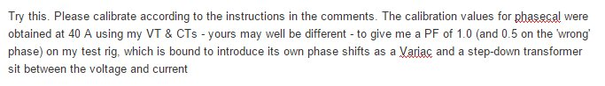

Hi all,
I just installed an emonTx in Belgium, in a house where they get 3x230V, without the neutral wire. I believe this is pretty common in the country, even for small apartments.
So I came up with a solution to measure the total power, using ideas from the 3-phase, 4-wire sketch that was already in the Example repository. I created my version in https://github.com/openenergymonitor/emonTxFirmware/tree/master/emonTxV3/RFM12B/Examples/emonTxV3_RFM12B_DiscreteSampling_3wires
The general idea is: you just need 2 power measurements to get the total power. Here's how it works in the sketch:
- You get a current measurement from CT1 and CT2 (let's call them I1 and I2), and a voltage measurement from the AC-AC transformer (let's call it V13 because it's measured between wires 1 and 3)
- In my example, EmonLib modified library file (called emonlib2) allows to time-shift V13 by 120 degrees so that it becomes V23
- I use this in the main sketch by using first CalcVI with CT1, then with CT2, then again on CT2 but with shifting the phase by 120 degrees (equivalent to shifting by 16 samples).
- Then the total power P = V13 * I1 + V23 * I2, so I have my total power measurement by adding the 2 power measures
I'm reasonably confident this is correct, but would love to have expert eyes on this to make sure I didn't do anything wrong.
In addition, I'm still trying to figure out what happens to the power factor. Not sure I should add Pf1 and Pf2, or do any other calculation. All ideas are welcome!
Re: emonTx 3-phase with 3 wires (no neutral)
The principle looks correct. It is standard theory that you need one less wattmeter (read emonTx power measurement) than the number of wires.
But I don't follow what you're doing by using CT2 twice, and I'm sorry but there's a serious error in your understanding of three-phase supplies.
What I think you need to do is forget emonLib and start with the emonTxV3_3Phase_Voltage sketch, which doesn't use emonLib. It's probably best to remove the maths for Phase 2, but use its I/O allocation for Phase 3, then change the delay for Phase Three to give you the correct angle between the phases - which is NOT 120° of course.
And you can't add power factors - you need to go back to how the power factor is calculated to get the overall power factor. So you need to use the definition, which is the ratio of the total real power and the total apparent power. Obvious when you think about it: if you have a pf=0.9 on each phase, adding gives a pf > 1 which is clearly ridiculous.
But you can add the real powers, either as instantaneous values before averaging or after averaging - both should give the same answer, and the apparent powers after first obtaining the rms currents and voltage and multiplying.
Re: emonTx 3-phase with 3 wires (no neutral)
I just installed an emonTx in Belgium, in a house where they get 3x230V, without the neutral wire.
Is that 230V between the phases? Does anything get connected to GND?
Re: emonTx 3-phase with 3 wires (no neutral)
If there is a ground connection other than a protective earth, then all bets are off, and it is not a 3-wire system. I was highly suspicious because as far as I'm aware, most of Europe is 3 phase, 230 V phase-neutral. If he really does not have a neutral connection to any of his installed equipment, and if his ac adapters are 400 V input, that's fine and he'll get the right answers. Otherwise there will be a nasty smell of burning transformer. I think he needs to look here, measure some voltages and decide what type of system he has.
I have to believe people know what they are talking about until there is good evidence that is not the case.
Re: emonTx 3-phase with 3 wires (no neutral)
I'm wondering where they buy their light bulbs and TVs. Surely they don't have to find 400V light bulbs? That got me wondering if it's 230V between phases.
Re: emonTx 3-phase with 3 wires (no neutral)
"That got me wondering if it's 230V between phases." That's always possible, so 130 V phase-neutral, but I'm subscribing to the view that Amaury has got his facts wrong and the supply is a perfectly normal 230 V three-phase, four wire TN-S or TN-C-S and he's got 2 of the three phases. If he measures the voltages between all possible permutations of wires and earth, we'll soon know.
Re: emonTx 3-phase with 3 wires (no neutral)
I understand in some countries it's quite common / normal practice not to have a neutral in a 3 phase supply. I think Norway is one typical country.
http://www.ccontrolsys.com/w/Electrical_Service_Types_and_Voltages
Re: emonTx 3-phase with 3 wires (no neutral)
Hi all, and thanks for your messages!
Sorry for my absence of reply: I thought I'd receive an email, but clearly it isn't the case. So I'll try to clear all doubts below:
- My supply is a perfectly normal three-phase, with 230V between any 2 of the phases. So all circuits in the house are connected between two phases, not between a phase and neutral. I think you can get a 4-wire connection in Belgium, upon special request if you have more power requirements. Then it's 380V phase-phase, which gives you about 230V neutral-phase
@Robert:
Sorry I think I got my explanation a bit wrong and clogged by code details. I'll try to summarize just the concepts, abstract from the implementation:
In each cycle, I do:
1) A power measure using CT1 and the voltage
2) A power measure using CT2 and the voltage shifted back by 120 degrees
Then I sum these two powers P1 and P2.
All the rest (measuring two times on CT2) is unnecessary programming details I used for debugging. Robert, most of the code I used is from the sketch you mentioned, including the time-shifting logic (indeed I used phase 3 as a reference). I just plugged it in emonLib2 so that I could start from the latest version. I don't think there's an error in that part.
A question I had for you, as you will probably have hit the same when programming the 4-wire version. In case a wire is switched from what you think, and you multiply the current for a phase by the voltage shifted by the wrong angle, how do you notice?
For the power factor, I found that if you have a balanced system, the power factor is PF = (P1+P2) / ( sqrt(3) * V * I). V being phase-phase voltage. However, in reality one rarely has a balanced system, in particular I will not be equal in the two measured phases. I'm planning to use I = average of I1 and I2 and see what the result is.
Thanks again!
Re: emonTx 3-phase with 3 wires (no neutral)
You have not tested that sketch, have you?
The general perception is that everything contained in the openenergymonitor GitHub account is accurate, and reliable. Your sketch cannot give accurate results and so cannot be relied upon. GitHub is not a place for experimental designs that are not in a usable form. You must withdraw your sketch from GitHub. Only after you have verified that it gives accurate results (and I strongly recommend that you should ask another independent user to verify that the sketch is accurate) should you contemplate reinstating it.
As for how do I notice the wrong phase rotation? You apply a very obvious and basic test. If you knew some electrical engineering, you would not need to ask that question. You would also not have made a fundamental error in your understanding of 3-phase supplies.
Re: emonTx 3-phase with 3 wires (no neutral)
I understand in some countries it's quite common / normal practice not to have a neutral in a 3 phase supply. I think Norway is one typical country.
I have never seen that in Norway. But Belgium (France and Italy) really seems to have a three phase configuration with 220V between phases, I found this (in German, but the table values are easy to interpret):
http://cache.automation.siemens.com/dnl/Tc/Tc0ODM2MQAA_34973099_HB/Kap_3_Netzspannungen_Frequenzen_V15_END_V2.pdf
Re: emonTx 3-phase with 3 wires (no neutral)
Yes, that's correct, 230V between phases in 3-wire configuration in Belgium.
Robert, I sent you a couple questions in a private message.
Re: emonTx 3-phase with 3 wires (no neutral)
Amaury, forgive me for quoting here what you wrote in a private message, but it is important for others to understand what I'm saying to you:
" 2) I measure power with CT2, using current I2 and voltage V, shifted by 120 degrees, which gives me P2. I copied the logic you have in your 4-wire sketch and adapted it for 2-phase measurement instead of 3.
Then the power is the sum of these 2 components. Do you see an issue here so far? Would love your help to understand where the mistake is. I willingly admit my knowledge of 3-phase power is rusty, but I thought that part was error-free.
In the meantime I tested it and it works fine..."
I told you in my first response what the principal problem is, and you continue repeating your mistake. I simply do not believe, with the sketch as it is, that it gives the correct values for power on the second phase (or if it does, you have found a way to make the ADC work really fast, and I can see no evidence of that). Go away, read my first post again, think carefully about the relationship between the three phase voltages and where you are measuring from, and while you are doing that, take down your sketch from GitHub.
Re: emonTx 3-phase with 3 wires (no neutral)
Jörg, that's a useful table and rather more comprehensive than Wikipedia in this regard, thanks.
Re: emonTx 3-phase with 3 wires (no neutral)
My supply is a perfectly normal three-phase, with 230V between any 2 of the phases. So all circuits in the house are connected between two phases,
So is one of the phases used as the "anchor" for all loads, or do loads get connected across all 3 phases?
For example, do all loads run between just A-B and A-C with the A phase being the "anchor" for all OR
can loads be run between A-B, A-C and B-C?
Re: emonTx 3-phase with 3 wires (no neutral)
to give you the correct angle between the phases - which is NOT 120° of course.
Robert, can you explain this part a bit more please? If you start out with three 133V phasors (A, B, C) 120° apart representing the phase-to-neutral voltages, and then subtract them to produce three 230V phasors (D, E, F) representing the phase-to-phase voltages, such that:
D = B - A, E = C - B, and F = A - C
then the three 230V phasors (D, E, F) are also 120° apart from each other, right? The subtraction makes their magnitude scale up by sqrt(3), and their phase shift around by 30° when compared to the original 3 phasors, but so long as you remain solely within one set of three phasors, or the other, then you'll only ever see 120° between them, right?
If you were trying to extrapolate the phase of the 230V phasors from one of the 133V phasors I can see the 30° would matter, but since he has no neutral to measure against, I assume phasors A, B and C are irrelevant to him.
Re: emonTx 3-phase with 3 wires (no neutral)
Thanks dBC - let's continue the Cluedo game.
What you explained is the first thing Robert said I got wrong. I started from scratch again, and got to the same conclusion as you. See attached the diagram of phasors. If V1, V2, V3 are your phase-neutral voltages, then V12, V23 and V31 are your phase-phase voltages and also form a 120 degrees triangle, shifted by 30 degrees compared to the phase-neutral voltages.
Next, I checked the power calculations using 2 current measures and 1 voltage measure:
I'm measuring the current on phases 1 and 2, let them be I1 and I2. I'm also measuring voltage between phase 1 and the third wire, being V13.
Theory tells us that the power will be the sum of the three phases' powers, which for a Star connection would be:
P=V1*I1+V2*I2+V3*I3
As I dont have access to V1, V2 and V3, I'm transforming this, using the knowledge that
V1=V3-V31
V2=V3-V32
We can transform the equation into
P=-V31*I1-V32*I2
or
P=V13*I1+V23*I2
The two terms above would be what traditional wattmeters would measure and that you can add either instantaneously or in average - as Robert said.
Now if I measure directly V13 (=-V31), I1 and I2, the only missing thing is V23 (or -V32). Based on my phasor diagram, V32 is V13 delayed back by 240 degrees (I added a 2nd picture of phasors with the negative versions for clarity).
As I said in another post, the only issue here is if your initial assumption is wrong and you were actually measuring I1, I3 and V12. Then the formula should be P=V12*I1+V32*I3. And you get V32 (=-V23) by delaying V12 by 120 degrees.
I think the way to distinguish the two is that in a 0 phase system, the power you should add to your directly measured term (V13*I1 in the first example) should be positive, where if you calculate the wrong phase shift, you'll end with a negative number. But that's only a guess.
Now, Robert made another comment:
"I simply do not believe, with the sketch as it is, that it gives the correct values for power on the second phase (or if it does, you have found a way to make the ADC work really fast, and I can see no evidence of that)"
This points to an implementation issue.
The only fundamental difference between my sketch and Robert's is that Robert's, the measuring loop acquires the 3 currents and the voltage in one go, then do all the calculations to shift phases and average the power.
In my sketch, from the main loop, I first go in a sub-loop to acquire I1 and V, calculate P1, then go in another sub-loop to acquire I2, re-acquire V, shift it by 120 degrees (or 240), and calculate P2. Then I sum P1 and P2.
The two approaches seem to be equivalent, as Robert's sketch calculates P1, P2 and P3 independently even if they're acquired in one go. As for the reference to the ADC I give up...
Thanks for your help!
Amaury
Re: emonTx 3-phase with 3 wires (no neutral)
I had written this out in words, then my browser threw them away when I tried to paste in the diagram. So only a brief explanation.
V1, V2 & V3 exist when you measure with respect to earth or neutral. But for you, V3 (U3 in your terminology) does not exist, it is your reference, from which you are measuring the other 2 voltages. (Vn exists, but you don't have a wire to it so you cannot measure it.) So when you move V3 to the origin of the diagram, it should look like this:
(Sorry, but I always draw my first phase along the +ve real axis!)
You had this in the maths, but you did not recognise that when you drew the diagram.
But there's another problem in your sketch: There are not exactly 8 / 16 sample pairs in 60° / 120°, therefore you need a separate adjustment to interpolate between 2 voltage samples. Phasecal will do that, but it has to be a different value for each of the two currents.
Re: emonTx 3-phase with 3 wires (no neutral)
It brings some warmth to my heart seeing us drawing the same thing.
My thinking was: if I measure V13, shift it back 240 degrees I get V32, but as I actually want V23, so I just reverse the sign.
I think what you're saying is that there's an easier way to do that: simply shift V13 back by 60 degrees? Given our diagrams are equivalent, this should come to the same.
Now in the second situation, where I measure V12, I1 and I3, I want to get V32 from V12. Here I think the only way is to shift back 120 degrees and reverse sign, or to shift back 300 degrees, as you can't shift forward in real life.
Following on, the disambiguation test:
As you don't know yet if you're measuring I2 or I3 when you plug the Tx, you can calculate the two variants of the voltage you could need: one shifted back by 60 degrees, the other by 300 degrees. If you made sure you had only consumption in your system (to avoid power flowing back), set your Voltage and Current transformers so that P1 is positive, and assume a power factor not too far from 1:
- If P2, using V shifted back by 60 degrees is positive, it means you had I2, therefore that's the measure to use. The other power measure, shifted by 300 should be negative (that's your diagram, Robert)
- Conversely, it should be the opposite if you were measuring I3: there you'd see P2 using V shifted by 60 degrees being negative, and the other positive.
(I attach the two pictures, I don't know how to make them appear in-line as you did.)
I follow you on the interpolation issue, but will have to dig deeper in the code to understand that issue better.
Amaury
Re: emonTx 3-phase with 3 wires (no neutral)
Staying with my diagram, because you have me confused with "Now in the second situation...". And your diagrams appear to use L2 as the reference now?
You don't want V12, you have no need for it. If your "neutral" is L3, then you measure the currents on L1 and L2 and the voltages to L1 and L2 from L3. There is no need to know anything about the new 'neutral' because it is your reference. So now you have a two-phase system. You don't need I3 because it is now the 'neutral' current. (It is of course the vector sum of the other two, the same as in a 4-wire system, and likewise we don't care. OK, if the loads are balanced it has the same magnitude as the other two currents, not zero, but we still don't care.)
Then, if your primary voltage - the one you actually measure - is V13, the voltage you are deriving from that by delaying it by 60° is V23 . You have everything you need.
Of course, when you come to calibrate Phasecal, you must have only two resistive loads connected L1-L3 and L2-L3, and you adjust for pf = 1 on each.
You should know the phase rotation from the wiring colours. I1 is the CT on L1 (brown) (the reference voltage that you are measuring) and I2 is on L2 (black) (whose voltage you are obtaining with the delay). The new 'neutral' is L3 (grey).
Re: emonTx 3-phase with 3 wires (no neutral)
Amaury,
Have you eventually managed to finalize this sketch and get it working?
Since I also live in Belgium and have the same three phase 3-wire system (recently realized it) I am a good candidate to test the sketch in order to get it back up on GitHub.
Let me know, otherwise I'll have to start from the existing three phase sketch and follow this thread to create mine.
Cheers,
Robert.
Re: emonTx 3-phase with 3 wires (no neutral)
Robert,
The changes you require are quite simple, I will be able to help when the system allows me to post.
Re: emonTx 3-phase with 3 wires (no neutral)
Hi RWall (I guess Robert Wall alter-ego) :-)
Did the system lock you out?
I feel the changes to your 3 phase sketch are not very big, I went through the sketch and through this thread and conceptually I think it is mainly about changing the phase delay of the phase 2 voltage and getting rid of phase 3 altogether, then some testing and calibration work.
But as the devil is in the details and from concept to realization can be a long way of small things to take into account, if the system allows it I would appreciate the help.
Thank you in advance.
Robert.
Re: emonTx 3-phase with 3 wires (no neutral)
Yes, we are one and the same person!
I don't have a 3-phase supply, so the way I will test will be the same as before - get the correct "wrong" values! Then it's over to you to prove that I got it right.
You are indeed correct about the changes that are required, I have not looked at the sketch recently but I can't think of any traps that you might fall into.
If you're prepared to wait a few days, I can probably produce a "2-phase" (because that's what it really is) or more likely I shall call it "3-phase Delta" sketch.
[Edit - the snag was that sketch uses a high pass filter to remove the bias offset. I've changed it to extract the offset with a LP filter (see the change to emonLib), but it's too late now to set up my test rig and prove it.]
Re: emonTx 3-phase with 3 wires (no neutral)
Thanks Robert!
Cannot promise to wait the few days but might have to, I am now reverse engineering my distribution panel to be able to identify which wire/phase goes where in the house and know which phase pair I have in each socket.Mainly to be able to have a reliable testing environment away from the distribution panel.
It really depends how the weekend will look like, if I have enough time I might plunge into the sketch also, then I will post the modifications and the results here, if not then I will wait for the 3-phase delta sketch.
The major part I did not go yet into details is the relationship between the number of samples corresponding to a certain degree phase delay. Not sure yet whether an empirical approach would get me to the result or if I have to get into the details :-)
Cheers,
Robert.
Re: emonTx 3-phase with 3 wires (no neutral)
"A few days" might be tomorrow - see the edit above!
Re: emonTx 3-phase with 3 wires (no neutral)

Re: emonTx 3-phase with 3 wires (no neutral)
Thanks Robert, I will certainly give it a try and let you know the results.
What I did so far last night is:
I identified which sockets have which pairs in order to be able to plug the AC-AC in the right one (L1/L3) in order to have the correct reference voltage. I then calibrated the Vcal so that I have the same value for the reference voltage measured by the emonTx and measured via a voltmeter.
I modified the original 3-phase sketch and halved the number of samples for PHASE2 (I now have 4) following the very error-prone logic - I think - that if 120 degrees corresponds to 8, 60 should correspond to 4. I left PHASE3 defined at 18 since I saw it is used as the size of the array that stores historical voltage values, used for delaying the phase.
I set up my testing rig: light bulb as load, one wire (times 10) in the CT1, the other (times 1) in the CT2. The second wire (times 10) also goes through a standard clamp meter to have a better idea on the current value (times 10) flowing through the circuit.
Using the test rig plugged into a socket (L1/L3) I calibrated the values of Ical1 and Phasecal1 to have correct values for I1 and PF1 (1.0)
Using the test rig plugged into a socket (L2/L3) I calibrated the values of Ical2 and Phasecal2 to have correct values for I2 and PF2 (1.0)
All I did was mainly empirical (lots of trial and error especially in the calibration) and now once calibrated I have a feeling it might work (again feeling is based on watching the meter turn 12 times for a 0.1kWh and then seeing the consumption in my emoncms go up by 0.1kWh), I am now gathering more data during a longer period.
I do not have a very good feeling about the calibration constants but that is mainly because I do not understand their role, did not go into those details.
Cheers,
Robert.
Re: emonTx 3-phase with 3 wires (no neutral)
Robert,
Your sketch works like a charm! Thank you!
I placed it in 'production' yesterday evening after calibration and so far I have only a 3% deviation (while with my empirical modifications I was at around 5-10%).
I will try to redo the calibration to try an get to an even better accuracy.
One question for my education: how is the PHASE2 (and PHASE3 in the original sketch) calculated? I tried to get the number of samples per voltage cycle and then take 1/6th for 60 degrees, but cannot get to the values in the sketch. Starting from 125 kHz (the feq of the ADC) divided by 13 (the number of clock cycles for one conversion) then divided by 50 (the number of voltage cycles) and then divided by 3 (the number of analog inputs) I get 64...How to get from here to 7? :-)
Thanks again!
Robert.
Re: emonTx 3-phase with 3 wires (no neutral)
Thank you for that. I'll send it to Glyn & Trystan for inclusion in Github. (Along with the 4-wire sketches, which I'm modifying to incorporate the LP filter, when I've done and checked them.)
Don't forget that the ADC is only part of the process. With the rest of the processing - loading and retrieving from the array, interpolation for Phasecal, the rms accumulators, etc; we've found (mainly from experience because it's too hard to go through the code and try to work out timing, especially as there's not too much information about what happens inside the Arduino IDE) that you get around 50 sample pairs per cycle. At the end of the day, any tweak to the code, or any shift in mains frequency, is going to affect the timing, so the possibly safe, certainly quick, way is empirical!
One day I'll rework MartinR's PLL sketch for 3 phase working. By locking the readings to exact known points on the wave, that should remove many of the variables in the phase angle department.
[For your amusement, I've just been playing with emonLib. As used in the "discreteSamples" sketch, the new LP filter version has improved on the old HP filter (which has slightly more maths in the filter calculations) by about 7 samples in 10 cycles (~200 ms), from 504-5 to 511-512. Removing temporary values, for example in the filters and where the squared value is added to the accumulator, and making it one line, has pushed the number of samples up to 516-517.
The additional performance increase - 1% - isn't great and won't have any measurable effect on the overall accuracy, so for the sake of newbies' understanding the code, I probably won't suggest that the rest of these changes should be incorporated into the library.]